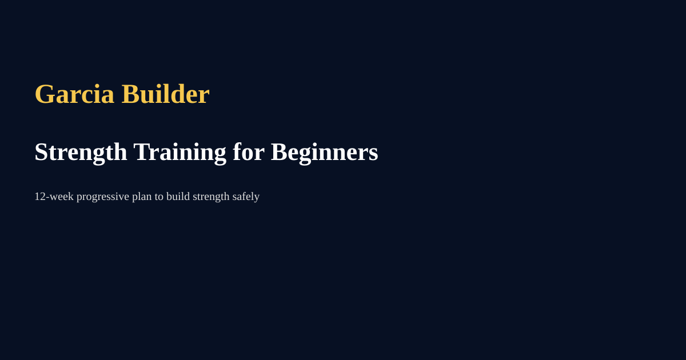

Strength Training for Beginners — 12‑Week Plan
By Andre Julio Garcia | June 2026

Why strength matters
Strength training builds muscle, improves metabolism, supports joint health, and boosts confidence. For beginners, the goal is consistent progression with solid technique.
Principles
- Focus on compound lifts: squats, deadlifts, presses, rows.
- Progressive overload: add weight, sets, or reps over time.
- Prioritise recovery: sleep, nutrition, and volume control.
12‑Week Outline (example)
Weeks 1–4: Learn movements, 2–3 full‑body sessions/week, 2–3 sets of 8–12 reps. Weeks 5–8: Increase intensity, 3 sessions/week, 3–4 sets of 6–10 reps. Weeks 9–12: Emphasise strength with lower reps (4–6) and heavier loads.
Technique tips
Warm up, use controlled tempo, and prioritize form over heavy loading. Record yourself and seek coaching early if possible.
Nutrition & recovery
Eat slightly above maintenance for muscle gain, aim for 1.6–2.2g/kg protein, and prioritise sleep 7–9 hours.
Conclusion
Start conservative, track progress, and stay consistent — strength gains follow persistent effort.
← Back to Blog